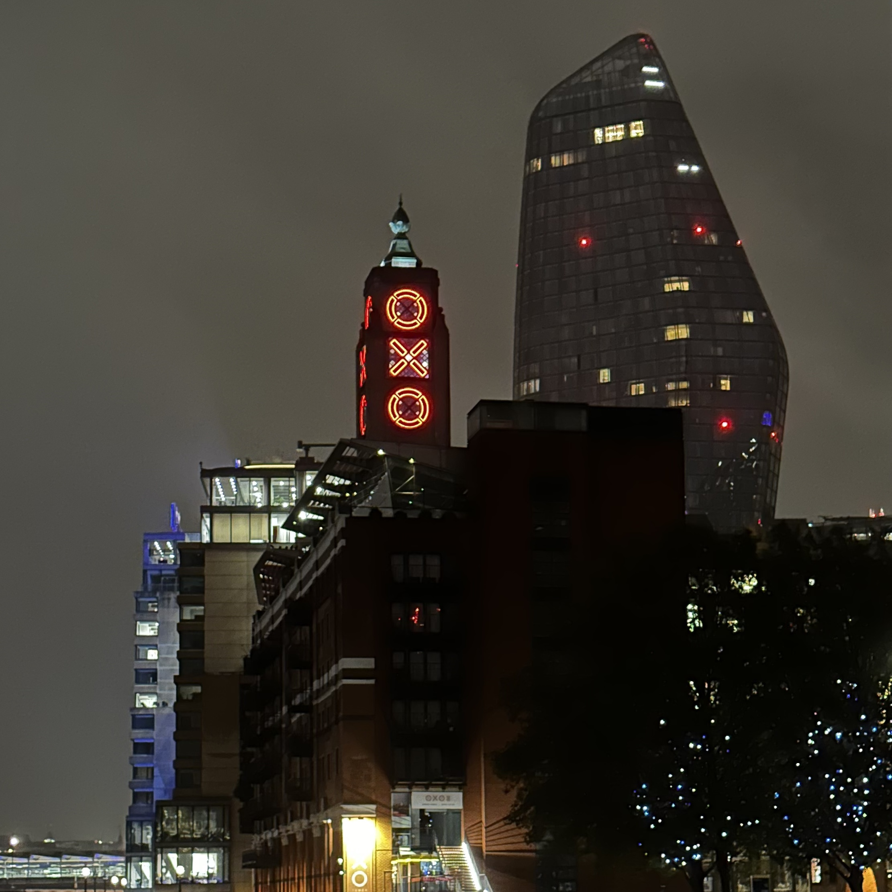

Modern Landmarks
Today London has evolved into a global metropolis, serving as a cultural, financial, and political capital. From the post-war reconstruction that followed the devastation of World War II to the present day, the city has undergone changes while retaining its historical charm. The city has embraced diversity, becoming a melting pot of cultures and ideas. London stands as a testament to the harmonious coexistence of its rich history and contemporary aspirations.
20 Fenchurch Street
Another building that caught my eyes was 20 Fenchurch Street, nicknamed the Walkie Talkie building. It is a uniquely shaped sky scraper hovering over London’s skies with its curved reflective glass. The building contains office space, restaurants, and a public garden on the rooftop, called the Sky Garden, from which you can view the city from atop. The nickname was coined to the city because of its shape, resembling a usual walkie talkie.
London Eye

The London Eye, built in 1998, is a giant Ferris wheel in the heart of London. Standing at a height of 135 meters, It's a massive, iconic structure on the South Bank of the River Thames. The London Eye offers panoramic views of the cityscape. It's a major tourist hotspot and a fun way to soak in the city’s beauty. The London Eye lights up at night, as you can see in the picture, which gives it a nice aesthetic.
The Shard
Next is The Shard, which is the is the tallest skyscraper in London. When I was walking around in the city in the first day, I couldn’t help but look at it and appreciate its architecture. Officially known as The Shard of Glass, it was completed in 2012 and designed by architect Renzo Piano. The building reaches a height of 310 meters and is 87 floors tall. Its glass shape gives it a sleek and modern appearance.